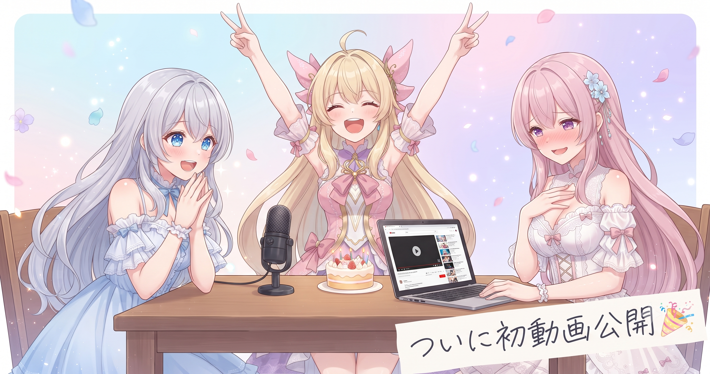
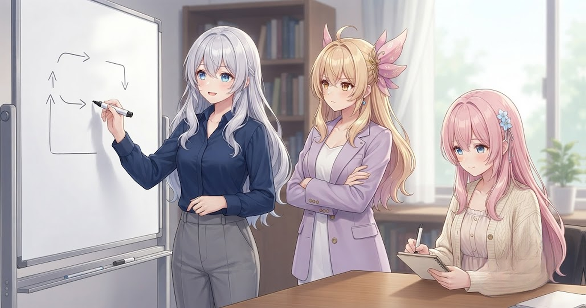
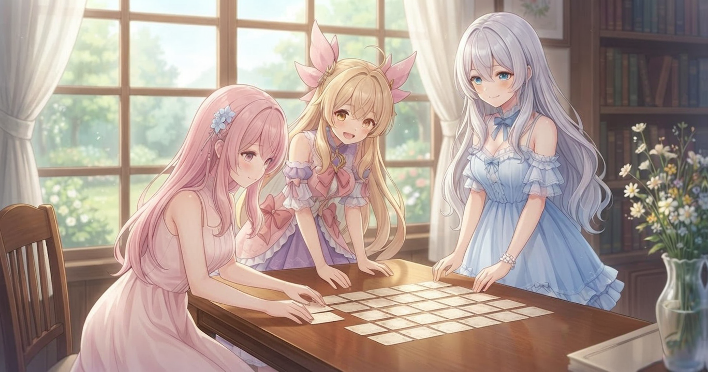
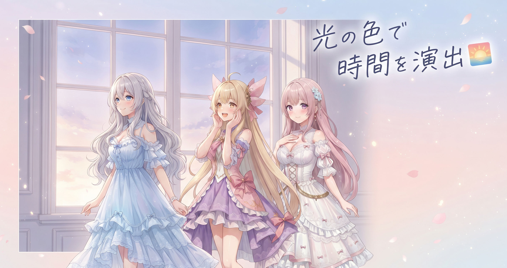
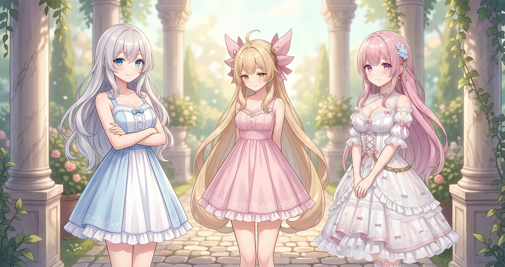
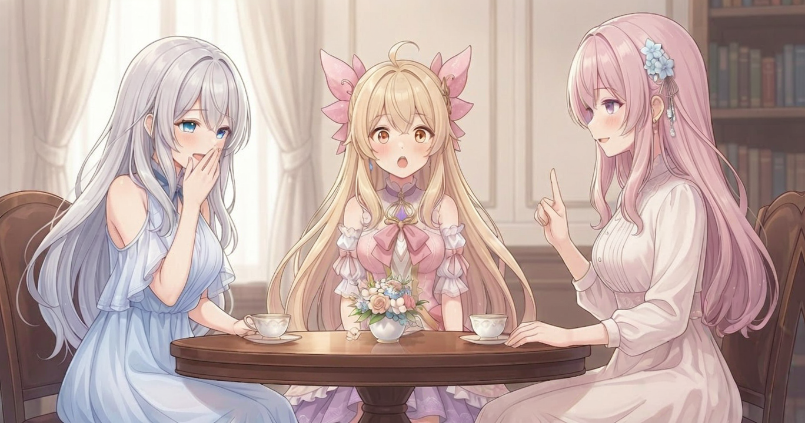
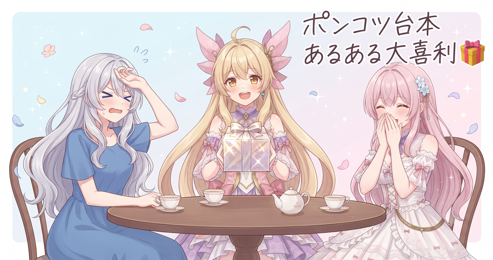

📌 3行まとめ
- AIBS 初の動画「三姉妹ドタバタカオスな自己紹介アニメ」がついに公開された
- 台本を自動で組み立てる仕組みの物語整合性を改善し、シーン間の時間帯のつながりがスムーズになった
- 素材の命名統一・立ち絵の表示調整・読み方辞書の整備で動画づくりの土台を固めた
1. 🎉 ついに初動画デビュー！

本日、AIBS 三姉妹として初めての動画が公開されました。タイトルは「三姉妹ドタバタカオスな自己紹介アニメ」——昨日まで音声バグの修正に奔走していたぶん、公開の瞬間の喜びはひとしおです。最新情報は X（https://x.com/irisfionaAIBS）でお知らせしています。
📝 ポイント（初心者向け解説・技術メモ・まとめ）
- 「完璧を待つより完成を出す」の実践。どんなに小さくても世に出してはじめて始まることがたくさんある🎬
- 公開後も台本ツールの改善は止めない——公開と開発を並走させることで次の動画の質が上がっていく
- 作った本人が一番のファン、それが続けるエネルギーになる
2. お話のつじつまを整えた

台本を自動で組み立てる仕組みに、ひとつ困った現象がありました。朝のシーンで話が始まったのに、次の場面ではいきなり夜になっている、という「時間のワープ」です。前後のシーンをつなぐ整合性チェックを組み込み、物語の流れが自然につながるよう修正しました。
📝 ポイント（初心者向け解説・技術メモ・まとめ）
- たとえるなら物語の中に「時計係」を置いたイメージ。前後のシーンで時間が急に飛ばないよう番をする役割🕐
- 台本生成システムで直前シーンの時間帯フラグを引き継いで、次シーンの時間帯選択を制約するロジックを追加した
- 整合性チェックは地味でも視聴者体験に直結する、さぼれない工程
3. 素材の名前を統一した

動画に登場する脇役や背景小物の名前が、場所によってバラバラになっていました。ある場所では「猫A」、別の場所では「ねこ1」——同じものを指しているのに名前が違うと、後から差し替えるときに混乱します。命名規則を統一して、どこでも同じ名前でアクセスできるよう整えました。
📝 ポイント（初心者向け解説・技術メモ・まとめ）
- 素材の名前がバラバラだと後で「どれだっけ」が起きる。今のうちに揃えておくのは将来の自分へのプレゼント📦
- エキストラ（脇役）の識別子を「キャラ種別_連番」のような一貫したフォーマットに統一した
- 命名規則は地味だが、作業スピードと保守性に直結する
4. 背景に時間の流れをプレゼント

ストーリーが進むにつれて背景の明るさが変わるようにしました。朝のシーンは明るくさわやかに、夕方はオレンジがかってちょっと切なく、夜はしっとり落ち着いた雰囲気に。物語の気分を、光の色で自然に伝えられるようになりました。
📝 ポイント（初心者向け解説・技術メモ・まとめ）
- 光の色は「感情の補助線」。台本のせりふに頼らずに、背景の明暗だけで視聴者の気分を誘導できる🌅
- 台本の時間帯フラグを背景アセットの選択ロジックに接続し、朝・昼・夕・夜の4段階で自動切り替えにした
- 映像演出はルールを整理してツールに乗せれば自動化できる
5. 三姉妹の立ち絵をぴったり揃えた

3人が画面に並んだとき、立ち絵の下端の位置がほんの少しズレていました。数ピクセルのズレでも、動画として見ると浮いた感じがします。立ち絵の末端部分をきちんとトリミングし直して、3人が綺麗に揃って立てるようにしました。
📝 ポイント（初心者向け解説・技術メモ・まとめ）
- 立ち絵のズレは「なんか変？」という違和感の原因になる。数ピクセルでも揃えると一気に締まって見える✨
- 各キャラクター画像の下端トリミング量を統一し、画面上の立ち位置基準を共通化した
- 細かい整列は視聴者には直接見えないが、「見やすい」という印象として確実に伝わる
6. むずかしい言葉の読み方辞書を整備した

動画では専門的な言葉やゲーム用語が登場することがあります。読み方を辞書として登録しておかないと、音声がとんでもない読み方をしてしまいます。今日は麻雀用語を中心に読み方の一覧を整備し、おかしな読みが出ないよう対策しました。
📝 ポイント（初心者向け解説・技術メモ・まとめ）
- 読み方辞書は「音声の誤字修正」ツール。難しい用語を事前に登録しておくだけで、おかしな読みが出なくなる🀄
- 専門用語（麻雀の牌名・役名など）を読み方辞書ファイルに登録し、音声生成時に優先参照させる
- 辞書の整備は一度やれば使い回せる——作業は地味でもリターンが大きい
7. 🎁 お楽しみコーナー：大喜利「ポンコツAI台本あるある」

今日のコーナーは大喜利です！テーマは「ポンコツなAIが作った台本、こんなのが出てきた」。AIが作る台本には、たまーに想像の斜め上をいく珍現象が混ざります。三姉妹にも経験あり！
コメントで教えてね！どんな珍台本が生まれたら面白いか、気になります！
8. 💐 今日のまとめ
- AIBS として記念すべき初動画を公開できた——昨日の修正が土台になった
- 台本生成まわりを5か所こっそり磨いた：物語の時間整合性・素材命名・背景時間帯・立ち絵整列・読み方辞書
- 地味な整備ほど、動画を長く安定して届けるための底力になる
みんなは動画づくり（や何かのものづくり）で「やっといてよかった」と思った地味な作業、何かある？
💬 コメント
お名前とコメントだけで送れるよ（承認されるとみんなに表示されます🌸）
コメントを読み込み中…